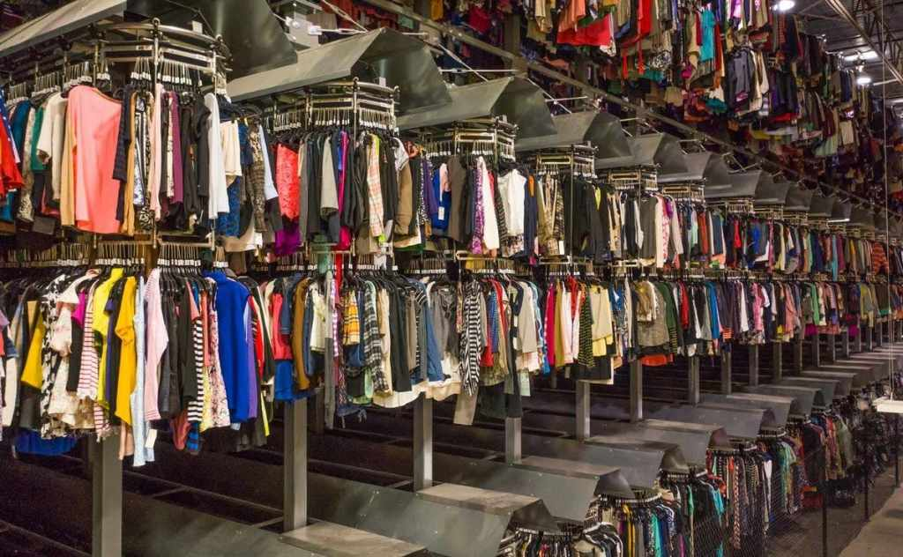

Ten Fun Ways to Reduce Food Waste
Stay posted for our upcoming article on 10 fun ways to avoid food waste!
Stay posted for our upcoming article on 10 fun ways to avoid food waste!
If you’re anything like me, you love to shop. The dopamine rush from browsing, buying and unpacking a parcel isn’t beaten. The fashion industry, however, is responsible for approximately 1.92 million tonnes of textile waste every year, with ever increasing emissions and human rights issues (Igini, 2023). Yet buying from ethical and sustainable brands also isn’t always an option for most people, with the high price tags and pressure from the ever-increasing speed of fashion cycles.
Luckily, there are a few options for those wishing to be a bit more sustainable, but without having to break the bank. One key option is buying second hand. This has the advantage of prolonging the life of clothes, preventing them from becoming waste so early on in their life - a break away from the linear model of consumption and moving towards the circular economy. But where are the best places to find second-hand clothes?
(Latest Bulletins, 2021)
Charity shops are maybe the most traditional form of second-hand shopping. They not only have the benefit of providing the in-person shopping feel, but also have the added benefit of the proceeds going to charity.
Don’t worry about clothes not necessarily being of a good quality, as everything is thoroughly checked before going into the shop floor. You can even find some luxury brands in charity shops for a bargain.
On another note, they are a great place to drop off unwanted clothing, to free up some space at home without letting your clothes go to waste.
Online charity shops, apps such as Vinted, Thrift+ and Depop - they have all been growing in popularity for buying and selling second-hand clothes.
If you also want to make a bit of extra money they can also be a profitable way of freeing up space at home, whilst actively contributing to the circular economy.
Certain events allow you to bring clothes to be swapped for others, sometimes for free or with a minimal charge, conditional on bringing clothes with you.
These operate at universities, for example, or the Loved Again London Clothes Swap event. Look out for such events local to you, as they can be a great way to find unique pieces.
If you don’t have access to such events, you always have the opportunity to organise something similar with family and friends. Maybe you have something you hardly wear that one of your friends would love and vice versa - without contributing to wasteful and polluting industries this swap adds to your wardrobe.
Igini, Martina. 2023. 10 Concerning Fast Fashion Waste Statistics | Earth.Org. Available at: https://earth.org/statistics-about-fast-fashion-waste/
Latest Bulletins, 2021. What is fast fashion: Definition, and more - Latest Bulletins. Available at: https://latestbulletins.com/what-is-fast-fashion-definition-and-more/